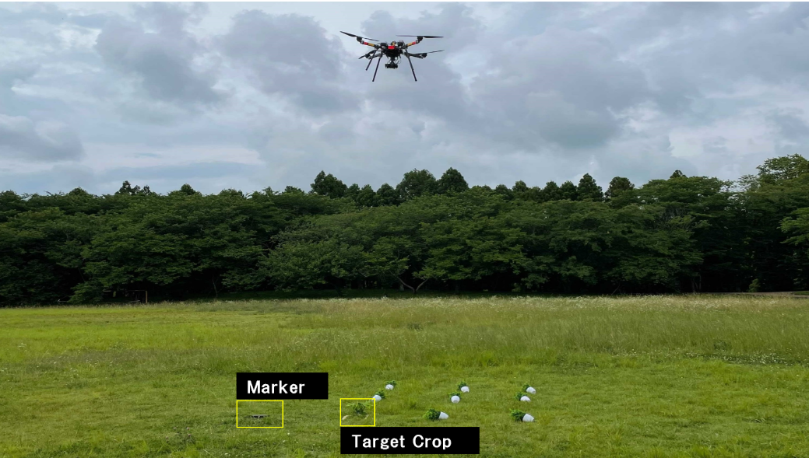
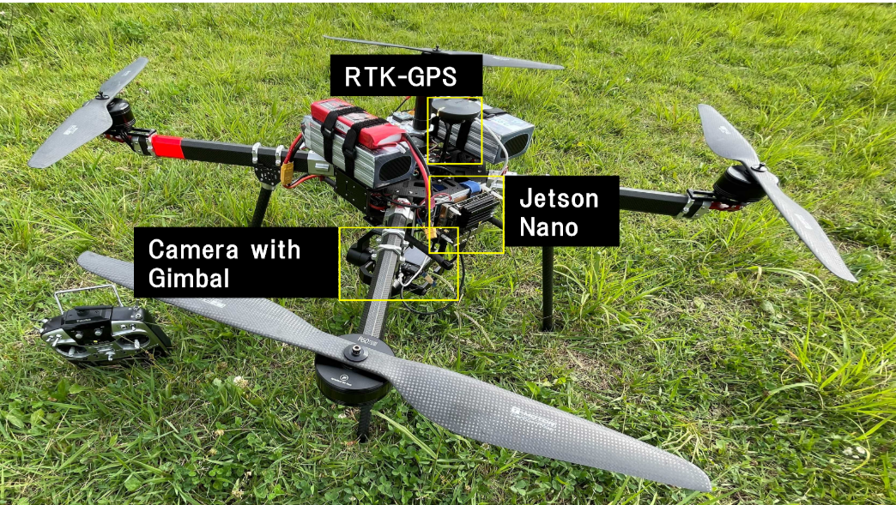
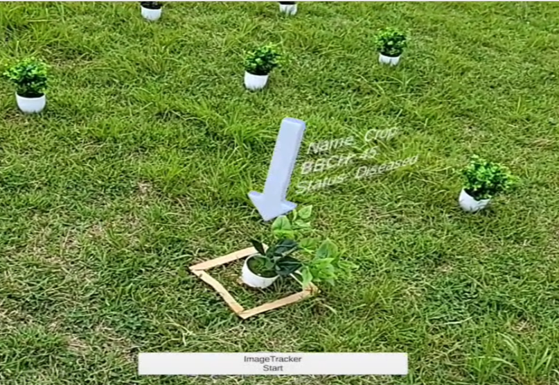

Diseased Crop AR
A drone-and-AR field assistance pipeline for diseased-crop removal. An RTK-GNSS drone surveys the field and pinpoints diseased plants from above; a mobile AR application then overlays in-field guidance to walk the operator straight to each plant.

— Overview
Targeted removal of diseased crops is laborious. Operators traditionally walk the field by eye — looking for visual signs, remembering positions, and hoping nothing was missed. The work scales poorly and is error-prone when plants are far apart or visually similar to healthy ones.
This system pairs an autonomous drone with a mobile AR app. The drone captures geo-referenced aerial imagery and locates diseased plants from above; their positions are then handed to a tablet-based AR overlay that guides the operator to each plant in physical space.
— Hardware
The drone platform integrates three components: RTK-GNSS for centimeter-level positioning, a gimbal-stabilized camera for aerial imagery, and an onboard Jetson Nano for image processing close to the sensor.

— AR Guidance
A mobile AR application tracks the device pose in real time and overlays markers on the diseased plants identified by the drone. The operator no longer needs to memorize positions — they just follow the on-screen guide through the field.

— Findings
Field experiments in outdoor environments verified the accuracy and feasibility of the pipeline. The AR registration stayed stable along realistic walking trajectories, and operators successfully located targeted plants without prior survey of the field.
— Authors
Lingrong Kong, Han Zhang, and Hajime Nobuhara.
University of Tsukuba.
— Links
— BibTeX
@inproceedings{kong2021diseased,
title = {Diseased Crop Removal Assistance System Using Augmented Reality and Drones},
author = {Kong, Lingrong and Zhang, Han and Nobuhara, Hajime},
booktitle = {2021 IEEE 10th Global Conference on Consumer Electronics (GCCE)},
pages = {522--525},
year = {2021},
publisher = {IEEE}
}